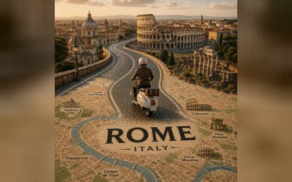

✳
Image / Video
Prompts
仓库首页
详细目录
GitHub ↗
浅色
AWESOME VISUAL PROMPTS
生图与生视频
Prompt 灵感库
.
从画面找到创作方向，查看来源、样片与完整提示词。
115
个创作方向
69
生图
46
生视频

城市地图微缩旅行海报
↗
⌕
搜索 Prompt
全部
生图
生视频
所有分类
所有分类
精选风格
跨越生图与生视频
全部风格
查看详细目录 ↗
风格详情
←
→
×
请在
仓库首页
浏览全部风格。